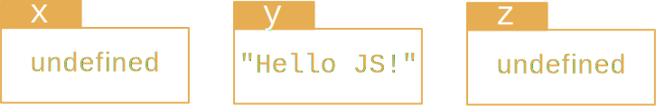
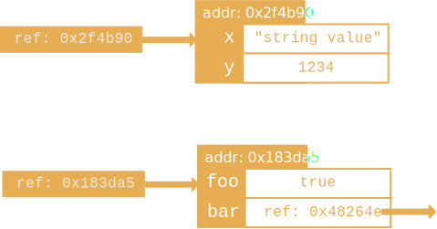

http://mbranko.github.io/webkurs
Ovo je deo web kursa
Promenljiva je imenovani kontejner za vrednost.
Ime se zove i identifikator.
var x;
var y = "Hello JS!";
var z;
Ove kutije su promenljive i svaka od njih ima vrednost.
U njima se može nalaziti bilo koja JavaScript vrednost.
var x;
var y = "Hello JS!";
var z;
z = false;
z = 101; // <---
Možemo joj dodeliti drugu vrednost nakon njenog kreiranja.
Blokovi koda omeđeni vitičastim zagradama ne uvode poseban opseg vidljivosti!
// what is i, $, p, and q afterwards?
var i = -1;
for (var i = 0; i < 10; i += 1) {
var $ = -i;
}
if (true) {
var p = 'FOO';
} else {
var q = 'BAR';
}
Kod sa prethodnog slajda se zapravo ponaša ovako:
var i, $, p, q; // all undefined
var i = -1;
for (i = 0; i < 10; i += 1) {
$ = -i;
}
if (true) {
p = 'FOO';
} else {
q = 'BAR';
}
Kad se program pokrene, sve deklaracije promenljivih se premeštaju
na vrh tekućeg opsega.
Ključne reči se ne mogu koristiti kao imena promenljivih:
null true false break do instanceof typeof
case else new var catch finally return void
continue for switch while debugger function
this with default if throw delete in try
class enum extends super const export import
implements let private public yield
interface package protected static
Vrednost je atomički podatak kojim operišemo.
Tip definiše skup mogućih vrednosti.
Postoji tačno 6 tipova u JavaScriptu.
Prvih 5 tipova su primitivni tipovi.
Svaka vrednost ovog tipa je referenca na neki objekat u memoriji. Takvu referencu u govoru često zovemo samo "objekat".
Objekat je skup osobina (property).
Osobina je imenovani kontejner za vrednost (sa dodatnim atributima).
Ime osobine zove se ključ.
Objekat se posmatra kao skup parova ključ-vrednost.
Slični pojmovi postoje i u drugim jezicima: map, dictionary, hash table, associative array...
// Value containers
var y = "Hello!";
var w = {
x: "test",
y: 1234
};
// To get the values
y; // "Hello!"
w; // (the object ref)
w.x; // "test"
w['x']; // "test"
w.y; // 1234
w["y"]; // 1234
var w = {
x: "test",
y: 1234,
z: {},
w: {},
"": "hi"
};
var w = new Object();
w.x = "test";
w.y = 1234;
w.z = new Object();
w.w = new Object();
w[""] = "hi";
Ova dva fragmenta proizvode isti rezultat.
Možemo menjati objekat nakon kreiranja.
var obj = {
1 : "Hello",
"3": "Good",
x : "JavaScript",
foo: 101,
bar: true,
"" : null
};
obj["2"] = "World"; // *1 Add & Set
obj["1"]; // *2 Get -> "Hello"
obj[2]; // *3 Get -> "World"
obj[3]; // *4 Get -> "Good"
obj.foo = 202; // *5 Set
delete obj.bar; // *6 Remove
delete obj[""]; // *7 Remove
Interpreter će vitičastu zagradu tumačiti kao "blok koda". Možemo naglasiti da se radi o objektu pomoću običnih zagrada (operator grupisanja).
Čitanje osobine nakon literala se ne preporučuje.
var w = { x: "test" };
var y = { x: "test" }.x;
w.x; // "test"
y; // "test"
{ x: "test" }.x; // SyntaxError: unexpected .
({ x: "test" }.x); // "test"
({ x: "test" }).x; // "test"
({ x: "test" })['x']; // "test"
({ x: "test" }['x']); // "test"
var x = { a: 100 };
var y = { a: 100 };
Slično pojmu pointera/adrese u jezicima kao što je C.
var x = { a: 100 };
var y = { a: 100 };
var z = y;
x === y; // false
y === z; // true
Dodela vrednosti je kopiranje reference (adrese)!
var x = { a: 100 };
var y = { a: 100 };
var z = y;
x === y; // false
y === z; // true
z.a = 200;
Osobini se uvek pristupa preko reference.
var x = { a: 100 };
var y = { a: 100 };
var z = y;
x === y; // false
y === z; // true
z.a = 200;
x.a; // 100
y.a; // 200
z.a; // 200
Kada kažemo promenljiva, osobina, simbol ili identifikator možda mislimo na:
Kada kažemo objekat možda mislimo na:
Neke objekte zovemo funkcije.
Funkcija je objekat koji možemo pozvati.
Funkcije se zovu metode u nekim slučajevima.
Koristimo ključnu reč function praćenu listom parametara i blokom koda da kreiramo funkciju.
var a = 7;
var sayhi = function (name) {
var a = "Hello " + name;
console.log(a);
return a;
};
Funkcija se kao objekat može dodeliti promenljivoj ili proslediti kao parametar drugoj funkciji.
Par zagrada iza imena predstavlja poziv funkcije. Parametri unutar zagrada se prosleđuju funkciji.
Svaki put kada se funkcija pozove, ona dobija svoj opseg vidljivosti sa lokalnim promenljivima i parametrima.
var a = 7;
var sayhi = function (name) {
var a = "Hello " + name;
console.log(a);
return a;
};
sayhi("J"); // "Hello J"
a; // 7
U JavaScriptu možemo pozvati funkciju sa pogrešnim brojem parametara.
Prilikom poziva nedefinisani parametri dobijaju vrednost undefined.
var f = function (a, b) {
console.log(typeof b);
return a + b;
};
f(3); // NaN ("undefined" printed)
f(3, 4); // 7 ("number" printed)
f(3, 4, 5); // 7 ("number" printed)
Funkcija ne mora da eksplicitno vrati rezultat.
U tom slučaju vraća se vrednost undefined.
var f = function () {
return;
};
var g = function () {
};
var foo = f();
foo; // undefined
g(); // undefined
var fact = function (n) {
if (n === 0) return 1;
if (n > 0) return n * fact(n - 1); // *1
};
fact(3); // 6, which is the factorial of 3
var fact2 = fact;
fact = null; // But if the value changes...
fact2(3); // TypeError: “null” is not function
var f = function fib(n) {
if (n === 0) return 0;
if (n === 1) return 1;
if (n > 1) return fib(n - 1) + fib(n - 2); // *2
};
f(10); // 55
var g = f;
f = null; // If the value changes...
g(10); // 55 (still working)
Ime fib je dostupno samo unutar te funkcije!
Funkcije se mogu pozivati pre deklarisanja zato što...
// We can invoke a function
// before its "declaration"
var x = 100;
plusOne(x); // 101
plusOne(y); // NaN
var y = 999;
function plusOne(n) {
return n + 1;
}
... sve deklaracije idu na početak opsega
var x, y, plusOne; // Variable declarations
plusOne = function (n) { // Function declarations
return n + 1; // are also moved to the
}; // top of current scope
x = 100;
plusOne(x); // 101
plusOne(y); // NaN
y = 999;
Interpreter će misliti da deklarišemo funkciju kada naiđe na function. Operatorom grupisanja možemo naglasiti da to tretira kao izraz.
(function () {
return 123;
}()); // 123
(function(){ return 'hi'; })(); // "hi"
!function(){ console.log('ya'); }(); // true
void function(){ console.log('ya'); }(); // undefined
void operator za bilo koji operand uvek vraća undefined.
Može poslužiti da se function tretira kao izraz umesto kao deklaracija.
Može se pozivati sa zagradama kao void(0) ili bez zagrada kao void 0.
Metoda je funkcija koja je osobina nekog objekta.
// The cat object has three properties
// cat.age, cat.meow, and cat.sleep
var cat = {
age: 3,
meow: function () {}
};
cat.sleep = function () {};
// We would say that cat.meow and
// cat.sleep are "methods" of cat
Tokom izvršavanja metode, referenca this (uglavnom) pokazuje na taj objekat.
var cat = {
age: 3,
meow: function () {
console.log(this.sound);
return this.age;
},
sound: 'meow~~'
};
cat.meow(); // 3 ("meow~~" is printed)
var m = cat.meow;
m(); // TypeError or undefined
Closure je par koji čine funkcija i okruženje za razrešavanje slobodnih promenljivih.
Kada koristimo promenljive iz globalnog opsega...
var a = 1;
var closureFunc = function () {
// The "environment" (the outer scope)
// determines to which value does the
// symbol `a` resolve here
console.log(a);
return a;
};
Kada koristimo promenljive iz globalnog opsega...
var a = 1;
var closureFunc = function () {
// The "environment" (the outer scope)
// determines to which value does the
// symbol `a` resolve here
console.log(a);
return a;
};
closureFunc(); // 1
a = 100;
closureFunc(); // 100
a = 'hello';
closureFunc(); // 'hello'
Okruženje se određuje u vreme kreiranja a ne u vreme izvršavanja!
var a = 1;
var closureFunc = function () {
// The "environment" (the outer scope)
// determines to which value does the
// symbol `a` resolve here
console.log(a);
return a;
};
var anotherFunc = function () {
var a = 2;
return closureFunc();
};
anotherFunc(); // 1
Funkcija koja kreira i vraća closure funkciju pri svakom pozivu
var getClosureFunc = function () {
var a = 1;
var closureFunc = function () {
// The "environment" (the outer scope)
// determines to which value does the
// symbol `a` resolve here
console.log(a);
return a;
};
return closureFunc;
};
var a = 3;
var clsr = getClosureFunc();
clsr(); // 1
Funkcijski izraz ugradimo u return...
var getClosureFunc = function () {
var a = 1;
return function () {
// The "environment" (the outer scope)
// determines to which value does the
// symbol `a` resolve here
console.log(a);
return a;
};
};
var a = 3;
var clsr = getClosureFunc();
clsr(); // 1
Closure se kreira kad se vraćamo iz anonimne funkcije
var clsr = (function () {
var a = 1;
return function () {
// The "environment" (the outer scope)
// determines to which value does the
// symbol `a` resolve here
console.log(a);
return a;
};
}());
var a = 3;
clsr(); // 1
Kako će se razrešiti identifikator u funkciji određuje se u vreme kreiranja funkcije.
Osim za this.
var x = 999;
var f = function () {
var x = 222; // *1
return function () {
x += 100;
return x; // *2
};
};
var g = f(); // *3
g(); // 322 // *4
g(); // 422 // *5
var f = function fac(n) {
if (n === 0) return 1;
if (n > 0) return n * fac(n - 1);
};
//----- The above code works like: -----
var f = (function () {
var fac = function (n) {
if (n === 0) return 1;
if (n > 0) return n * fac(n - 1);
};
return fac;
}());
var w = [
"test",
1234,
{},
[],
"hi"
];
w[4]; // "hi"
var w = new Array(5);
w[0] = "test";
w[1] = 1234;
w[2] = new Object();
w[3] = new Array();
w[4] = "hi";
w[4]; // "hi"
push
var arr = [ "test", 1234, {}, [], "hi" ];
arr.push("sixth"); // 6
arr.length; // 6
arr[5]; // "sixth"
arr[7] = 012; // 10
arr.length; // 8
arr[6]; // undefined
arr[7]; // 10
arr[8]; // undefined
arr.length; // 8
length
var arr = [ "test", 1234, {}, [], "hi" ];
for (var i = 0; i < arr.length; i += 1) {
console.log(arr[i]);
}
forEach
var arr = [ "test", 1234, {}, [], "hi" ];
arr.forEach(function (val /*, i, arr*/) {
console.log(val);
});
map, some, every
var arr = [ "test", 1234, {}, [], "hi" ];
arr.map(function (val /*, i, arr*/) {
return typeof val;
});
map prolazi kroz ceo niz i vraća niz vrednosti izračunatih datom funkcijomsome se zaustavlja kad naiđe na trueevery se zaustavlja kad naiđe na falseforEach, map, some, every
var arr1 = [1,3,5,7,9];
var arr2 = [1,2,5,7,9];
var isOdd = function (n) { return n % 2 === 1 };
var isEven = function (n) { return n % 2 === 0 };
arr1.every(isOdd); // true
arr2.every(isOdd); // false
arr1.some(isEven); // false
arr2.some(isEven); // true
var print = function (n) { console.log(n) };
var addTen = function (n) { return n + 10 };
arr1.forEach(print); // 1, 3, 5, 7, and 9 are printed
arr1.map(addTen); // [11,13,15,17,19]
Object.keys vraća sve ključeve - sve nazive osobina
var obj = { a: "test", b: 1234, c: "hi" };
Object.keys(obj); // [ "a", "b", "c" ]
Object.keys sa map vraća sve vrednosti osobina
var obj = { a: "test", b: 1234, c: "hi" };
Object.keys(obj).map(function (key) {
return obj[key];
});
// [ "test",
// 1234,
// "hi" ]
Objekat omogućava pravljenje organizovanih i ugnježdenih struktura.
ObjectFunctionArrayDateRegExpErrorBooleanStringNumberIma više podvrsta.
Wrapper objekti, slično kao u Javi.
( true ).toString(); // "true"
( false ).toString(); // "false"
( 3.14 ).toString(); // "3.14"
( 3.14 ).toFixed(); // "3"
( "Hello" ).length; // 5
( "Hello" ).toUpperCase(); // "HELLO"
( "HELLO" ).slice(1, -1); // "ELL"
( "Hello world" ).split("o"); // [ "Hell", " w", "rld" ]
new operatora ili pomoću literalaprototype koja se koristi za nasleđivanje i deljene osobineprototype je ili null ili referenca na objekatArray se koristi za kreiranje novog nizaArray.prototype već sadrži dosta osobina:length, map, toString, forEach, indexOf, filter, ...var x = new Array(2);new, objekat se kreira sa osobinama koje definiše konstruktorlength je postavio Arrayvar x = new Array(2);Array.prototype[[Prototype]][[Prototype]]prototype njegovog konstruktoranull na koju pokazuje [[Prototype]] osobina od XZa čitanje osobine X objekta Y:
Y ima osobinu X, vrati njenu vrednostY-ov prototip jednak null, vrati undefinedX Y-ovog prototipaZa upis osobine X objekta Y sa vrednošću Z:
Y nema osobinu X, kreiraj novu osobinuZ u novu osobinu X objekta Y
var arr = [ 11, 22 ];
arr.length; // 2
arr.toString(); // "11,22"
arr.map(function(n){return n+1}); // [ 12, 23 ]
arr.hasOwnProperty('length'); // true
arr.hasOwnProperty('toString'); // false
arr.hasOwnProperty('map'); // false
Array.prototype.hasOwnProperty('toString'); // true
Array.prototype.hasOwnProperty('map'); // true
arr:length je sopstvena osobinatoString i map su nasleđene
var Cat = function (name) {
if (name) this.name = name;
};
Cat.prototype.name = 'Nyan Cat';
Cat.prototype.meow = function () {
return 'Meow~ I am ' + this.name;
};
var pusheen = new Cat('Pusheen the cat');
var nyancat = new Cat; // () can be omitted when no args
pusheen.meow(); // "Meow~ I am Pusheen the cat"
nyancat.meow(); // "Meow~ I am Nyan Cat"
this pokazuje na novi objekatnew
var catPrototype = {
name: 'Nyan Cat',
meow: function () {
return 'Meow~ I am ' + this.name;
}
};
var pusheen = Object.create(catPrototype);
pusheen.name = 'Pusheen the cat';
var nyancat = Object.create(catPrototype);
pusheen.meow(); // "Meow~ I am Pusheen the cat"
nyancat.meow(); // "Meow~ I am Nyan Cat"
MDN JavaScript Reference sadrži detalje o korišćenju ugrađenih objekata: Object, Function, Array, String, Date, RegExp, ...
Object, Array, itd. su osobine globalnog objektasetTimeout su takođe osobine globalnog objektathis u globalnom opsegu kada interpreter nije u striktnom moduwindow u web čitačuglobal u Node.js
var myNewVar = 1; // using var to declare a variable.
myOtherNewVar = 2; // var is optional.
alert(myNewVar); // will alert 1
alert(myOtherNewVar); // will alert 2
Ključna reč var nije obavezna prilikom deklaracije promenljive.
Kada se promenljiva deklariše bez var, interpreter podrazumeva da koristimo promenljivu u višem opsegu od trenutnog. Ako je tamo ne nađe, tražiće je uz lanac opsega sve do globalnog opsega. Ako je ne nađe ni tamo, dodaće novu promenljivu u globalni opseg.
Deklaracija promenljive sa var smešta promenljivu uvek u tekući opseg.
Deklaracija u globalnom opsegu
function testScope() {
myTest = true; // now myTest is global.
alert(myTest);
}
testScope(); // will alert "true"
alert(myTest); // will alert "true" as well, because now myTest is global.
Ograničavanje opsega sa var
function testScope() {
var myTest = true;
function testNestedScope() {
var myTest = false;
alert(myTest);
}
testNestedScope();
alert(myTest);
}
testScope(); // will alert false, and then true.
Pristup promenljivoj pre deklarisanja
function testScope() {
var myTest = true;
function testNestedScope() {
alert(myTest);
var myTest = false;
}
testNestedScope();
alert(myTest);
}
testScope(); // will alert "undefined", and then true.
Eksplicitna verzija prethodnog listinga
function testScope() {
var myTest = true;
function testNestedScope() {
var myTest;
alert(myTest);
myTest = false;
}
testNestedScope();
alert(myTest);
}
testScope(); // will alert "undefined", and then true.
var colors = ['red', 'green', 'blue'];
document.getElementById('element').addEventListener('click', function() {
// this je referenca na element koji je primio klik
var that = this;
colors.forEach(function() {
// this je undefined
// that je referenca na element koji je primio klik
});
});
Vrlo česta zakrpa :(
cube(x) = x * x * x(x) → x * x * x(x, y) → x + yx → (y → x + y)f(x, y) = x + yg(y) = y → f(x, y)
function f(x, y) {
return x + y;
}
će postati:
function g(x) {
return function(y) {
return x + y;
};
}
Provera:
f(1, 2) === g(1)(2)
Pošto su funkcije first-class objects, može i ovako:
function g(h) {
return function(y) {
return h(h(y));
};
}
Provera:
81 === g(function(x) {
return x * x;
})(3);
Ako damo samo jedan argument funkciji...
function g(h) {
return function(y) {
return h(h(y));
};
}
var n = g(function(x) {
return x * x;
});
Možemo je koristiti više puta:
337 === n(3) + n(4);
Ovo se zove parcijalna aplikacija i nije isto što i currying.
Za funkciju sa više od 2 argumenta
function f(x, y, z) {
return x + y + z;
}
Pravilan način za parcijalnu aplikaciju je kroz bind
var f1 = f.bind(null, 1);
Poziv parcijalno apliciranoj funkciji vraća rezultat, a ne sledeću funkciju u lancu!
6 === f1(2, 3);
Vrednost ovog izraza je true:
(1 + 2 === 3)Vrednost ovog izraza je false:
(0.1 + 0.2 === 0.3)Objasni zašto.
Nakon izvršavanja sledećeg koda:
a = 3; b = a; b = 4;vrednost a je i dalje 3, bez obzira na b. Ali nakon izvršavanja:
a.x = 3; b = a; b.x = 4;vrednost a.x postaje 4. Objasni zašto.
Ugrađena funkcija parseInt u globalnom objektu pretvara string u broj. Na primer:
parseInt('31')To radi i za različite osnove:
parseInt('A', 16); // 10
parseInt('11', 8); // 9Za dati niz i wrapper funkciju:
var arr = ['3', '4', '5', '6'];
var myParseInt = function (n) {
return parseInt(n);
};Rezultat ovih poziva je neočekivan:
arr.map(myParseInt); // [3, 4, 5, 6]
arr.map(parseInt); // [3, NaN, NaN, NaN]Objasni zašto.
U JavaScriptu, kada se funkcija pozove, neće uvek raditi tako što će lokalne promenljive čuvati na steku. Zašto?
Napomena: Lokalne promenljive i parametri se skidaju sa steka prilikom povratka iz funkcije.
Realne primene JavaScripta često koriste single-threaded JavaScript interpreter koji ima event loop i job queue. Funkcija setTimeout prima dva parametra:
setTimeout(callbackfunc, millisec)Prilikom poziva funkcija dodaje novi event i vraća se. Kada istekne millisec, u job queue se dodaje funkcija callbackfunc. Kada dođe na red u job queue, funkcija će biti pozvana. Recimo da smo hteli da ispišemo brojeve 1, 2, 3, 4, 5 posle 1, 2, 3, 4, 5 sekundi:
for (var i = 1; i <= 5; i += 1) {
setTimeout(function () {
console.log(i);
}, i * 1000);
}Dobijen je rezultat:
6 (printed after 1 second)
6 (printed after 2 seconds)
6 (printed after 3 seconds)
6 (printed after 4 seconds)
6 (printed after 5 seconds)Array.prototype.forEachJedan način da podelimo string u niz karaktera je da pozovemo Array.prototype.slice za string objekat:
String.prototype.sliceAsAnArray = Array.prototype.slice;
('hello').sliceAsAnArray(); // [ 'h', 'e', 'l', 'l', 'o' ]
('world').sliceAsAnArray(); // [ 'w', 'o', 'r', 'l', 'd' ]Prilikom poziva sliceAsAnArray, this pokazuje na anonimni string objekat. Array.prototype.slice će to iseći na delove
this[0], this[1], this[2], ..., this[this.length - 1]Zašto ovo radi kako treba? Napomena: proveri svrhu call i apply metoda za funkcije.
Napiši funkciju koja liči na konstruktor koja kreira novi objekat za svaki poziv bez korišćenja new operatora.
Ne zaboravi prototipsko nasleđivanje tako da sve zajedničke osobine mogu biti deljene preko roditeljskog objekta.
Napomena: Object.create(proto) vraća novi objekat sa njegovom osobinom [[Property]] inicijalizovanom na parametar proto.
Napiši factory funkciju koja proizvodi objekte sa osobinama koje su dostupne samo njegovim metodama. Na primer, ako kreiramo objekat na sledeći način:
var myobj = createMyObjectFactory({
param1: 100,
param2: "test",
param3: true
});U objektu myObj postojaće i privatna osobina counter koja čuva broj poziva metode myObj.getData() i metoda myObj.getCounter koja vraća vrednost counter. Dakle, izraz myObj.counter treba da vrati undefined ali myObj.getCounter() treba da vrati tekući broj poziva:
myobj.getData();
myobj.getData();
myobj.getData();
myobj.counter; // undefined
myobj.getCounter(); // 3Napomena: closure.